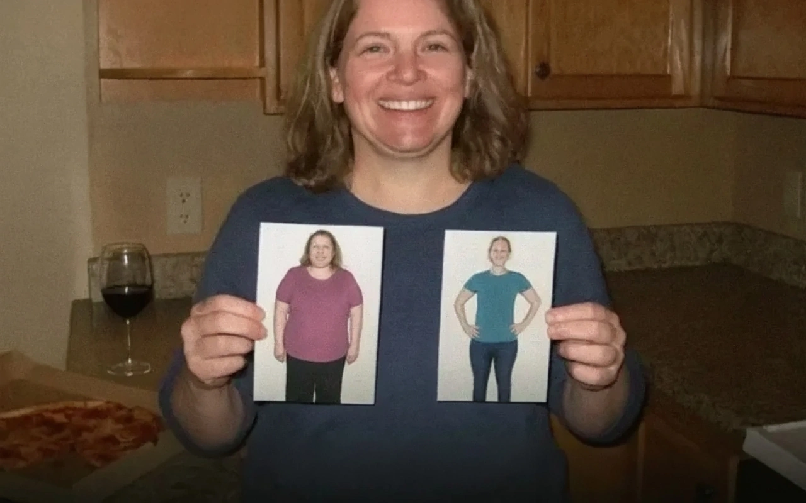
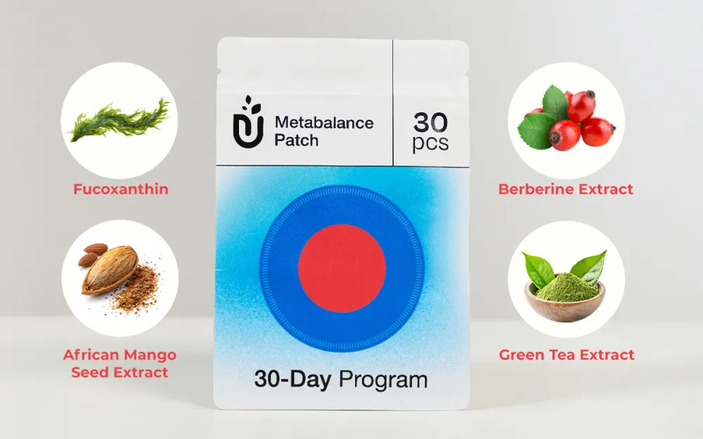

How This Unusual Skin-Applied Habit Helped Me Feel More Comfortable in My Body

My name is Sarah M., I’m 54, and I live in Denver with my husband and our two teens. I’m just a regular working mom who wanted to feel more confident and balanced again.
When My World Fell Apart
For years, I struggled with feeling sluggish and "heavy." I tried every diet, every trendy supplement, and spent a fortune on gym memberships I was too tired to use. It felt like a never-ending cycle of disappointment.
I hit 40, and it was like someone flipped a switch. My metabolism hit a brick wall. The pounds crept on slowly, then faster. Soon I was buying size 14 jeans and avoiding mirrors like they were contagious.
Everything came crashing down last spring while shopping for my daughter's graduation dress.
The dress wouldn't zip! Not even close.
Size 16. What I saw in that harsh fluorescent mirror made my knees buckle - a woman I didn't recognize, puffy and defeated.
That's when I heard it.
Through the dressing room wall: "Did you see that woman who just went in there? She grabbed like four different sizes... I feel so bad for her."
They were talking about me.
I sobbed in that dressing room - ugly, choking sobs. I wasn't okay. I was drowning.
Later, my daughter Emma showed me graduation photos. I looked like a stranger fading away while everyone else celebrated.
"Mom," Emma said quietly, "You haven't seemed... happy... in a really long time."
That broke my heart. My own daughter had been watching me disappear.
My Expensive Failures
I desperately tried everything.
Weight Watchers lasted six weeks - the point-counting felt like prison.
The gym was a disaster - three visits total before I gave up.
Keto turned me into a nightmare with brain fog and mood swings.
I even looked into those "miracle" procedures after seeing celebrity transformations. $1,200 per month out of pocket???!! We couldn't afford that, and those side effects terrified me anyway.
Everything Changed After This Surprising Discovery

My turning point came at a family barbecue when I barely recognized my sister-in-law, Michelle. She looked incredible — glowing, confident, and easily 30+ pounds lighter.
“What on earth are you doing?” I asked.
She smiled and said, “Honestly? It’s these Purisaki Patches I put on every morning.” She even showed me her before-and-after photos, and the difference was undeniable. She explained that instead of going through the stomach, Purisaki delivers plant extracts through the skin for smoother absorption.
I was intrigued... but still skeptical.

Three days later, I met my old college roommate, Lisa Chen, who happened to be in town for a medical conference. When I mentioned Michelle’s transformation, Lisa nodded immediately.
“You’re describing metabolic resistance,” she said. “After 35, a lot of women’s bodies respond differently to traditional weight-loss methods. The digestive system gets overwhelmed, and it stops absorbing key nutrients efficiently.”
She explained that new research suggests transdermal delivery — like the approach Purisaki uses — may offer better ingredient uptake than oral supplements.
“Your skin has direct access to your bloodstream,” she said. “Some early studies show these kinds of ingredients may work more effectively this way.”
Then she reached into her bag, laughed, and said,
“I actually picked up a few samples of the Purisaki Patches at the conference. A lot of scientists were talking about them. I thought you might want to try.”
I left that café with a little pack of Purisaki Patches... and a tiny bit of hope I hadn’t felt in years.
How It Actually Works
Once I got home with those sample Purisaki Patches, I finally understood why Michelle's results made so much sense. Purisaki delivers its ingredients directly through the skin — giving them a more direct path into the bloodstream.
Each Purisaki Patch includes a blend of naturally derived ingredients often associated with metabolic support, including:
- ✅ Fucoxanthin – a unique compound from seaweed often linked to supporting stubborn midsection areas
- ✅ Green Tea Extract – commonly associated with energy and metabolic balance
- ✅ African Mango Seed – traditionally used for appetite support
- ✅ Pomegranate Oil – known for its antioxidant and wellness properties

Because the ingredients bypass the gut, the support feels steadier and gentler throughout the day — no jitters, no sudden crashes, just more balanced energy and calmer cravings.
Here are a few things I personally appreciated about using the patch:
✅ Works quietly in the background during your day
✅ Helps keep cravings in check
✅ Uses a skin-based delivery system
✅ Doesn’t require intense diets or complicated routines
And the best part? It takes ten seconds to use.
Just peel, stick, and go. You wear the patch for about 8 hours, then remove it — like flipping a simple “on/off” switch. No reminders, no schedules, and no lifestyle overhaul required.
I Took Those Patches Home & Here's What Happened Next
I have to be honest, I was a bit skeptical. Personally, those stickers looked ridiculous, but I was curious enough to try them. And what happened in the next few weeks simply blew my mind into a million pieces!
Week 1
The first thing I noticed wasn't weight loss - it was my sleep. No more 3 AM wake-ups. My wine cravings disappeared completely. The scale showed 3 pounds down.
Week 4
I'd lost 12 pounds total. People asked if I'd done something different with my hair. I had energy to play with my kids after work instead of collapsing.
Month 2
This is when things really accelerated. Weight came off steadily. Pizza Fridays continued, but portion control happened naturally. By the end of month two, I'd lost 28 pounds total.
Month 3
I kid you not. When I stepped on my scales I thought it was an error. I reached 42 pounds lost. Emma said I had my "sparkle back." Shopping became fun instead of humiliating. But the transformation wasn't done yet.
Month 4
When I stepped on the scale, I had to check twice. 52 POUNDS TOTAL!!! I DID IT! I reached my goal weight! And I'd done it without giving up a single thing I loved. My body had finally reset itself.
Real Women, Real Results

"I'm 57 and thought my flabby belly was permanent after menopause. Lost 28 pounds in less than two months with these patches."

"I travel constantly and eat out all the time. The patches are perfect - just pack them in my carry-on. Down 35 pounds and counting."
"I hate the gym and don't have time anyway. No exercise needed. I've lost 41 pounds just living my normal life."
And these are just three examples out of 15,000 women who tried Purisaki Berberine patches.
Most even reported visible results within the FIRST week of using this patch without side effects.
I Want To Try This!If You're Reading This, Pay Close Attention...
If you ask me, finally feeling in control of your cravings, waking up with steady energy, and watching your clothes fit more comfortably again? That’s truly priceless.
So if you’ve been struggling with stubborn weight, slow metabolism, or constant energy dips... Purisaki is absolutely worth considering.
Right now, the makers are offering an exclusive 70% discount for readers of this page — but only while supplies last. You’ll also get:
✅ Free shipping
✅ 60-day satisfaction guarantee
✅ Fresh production batches with verified-quality seals
In my experience, taking back control of your body doesn’t have to feel like punishment. Sometimes, the smallest daily habit can shift everything.
If you’re ready to feel lighter, more balanced, and more like yourself again... Purisaki could be the gentle support you’ve been searching for.
Ready to Start Your Own Transformation? Begin with Purisaki!Limited Time Offer — and an Important Warning

Purisaki has been gaining attention quickly — and with the current 70% discount, stock has been running out faster than expected. Thousands have already tried it to support stubborn weight, cravings, and low energy, and new batches often sell out as soon as they’re released.
But with all this demand, I also started hearing some unsettling stories. Women were buying “similar” patches from random websites and seeing zero results — or worse, dealing with irritation from cheap knockoffs using unknown fillers and outdated delivery systems.
That’s why the company now uses official holographic seals and batch verification to ensure authenticity.
If you decide to try Purisaki, make sure you’re getting the real thing — only from the official website while the 70% discount is still active. Supplies are limited, and once this batch is gone, the offer ends.
My Final Words
Six months ago, I was hiding from mirrors and avoiding social events whenever I could. I felt invisible, exhausted, and stuck in a body that didn’t feel like mine anymore.
Now, after making Purisaki Patches part of my daily routine, I’m finally feeling comfortable in my skin again. I’m back in a size 8 dress I haven’t worn since my twenties, my energy feels steadier, and I actually look forward to getting dressed in the morning.
Because of high demand, Purisaki stock tends to sell out quickly — and the special pricing offered to readers of this page is only available while supplies last.
If you're ready for a fresh start, your own change could begin as soon as tomorrow.
UPDATE: We have just received word that due to a viral social media post, the current batch of Purisaki is selling out faster than anticipated. The 70% discount link below is currently active, but it may expire within the next few hours. If you click the link and see a “Sold Out” message, please check back next month. If you see the order form, we highly recommend securing your bundle immediately before inventory is depleted.
15,000+ Women Felt a Change In 1 Week
By Discovering Key To Weight Loss
See how a small patch became a weight management breakthrough for thousands of women.


I was skeptical at first - how could a patch really help? But after a week, I noticed I wasn't reaching for my afternoon snacks anymore. It's so easy to just put it on in the morning and forget about it. Finally something that fits into my crazy mom schedule!
Honestly, I've tried everything. This is the first thing that didn't make me feel jittery or sick. I love that it's natural and I don't have to remember to take pills throughout the day. The hunger pangs between meals have really calmed down. 16 lbs down already!!!
I wanted those fancy weight loss pills celebrities use, but some friends told me about natural alternatives before considering expensive pills. So glad I found these patches! They're discreet - I wear them under my work clothes and nobody knows. The cravings for sweets after dinner have almost disappeared. I lost 7 lbs!
As a working mom, I needed something simple. No pills to remember, no appointments, no drama. Just stick it on and go. I feel more in control of my eating habits for the first time in years.
Menopause left me with a lot of unwanted weight, everything changed with my body. These patches have helped me feel more like myself again. No side effects, no fuss. I just wish I'd found them sooner, because I'm 15 lbs down!
I struggled with weight since menopause, and my doctor kept pushing expensive specialty superfood diets. I thought I'd give this a try first. I don't get those terrible hunger pangs like I used to, especially in the evenings when I'd raid the kitchen. It's simple enough for an old gal like me to manage!
*Individual results may vary.